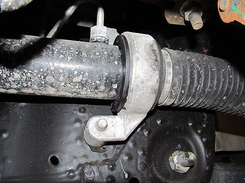
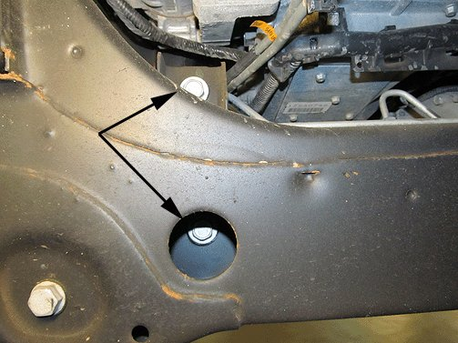
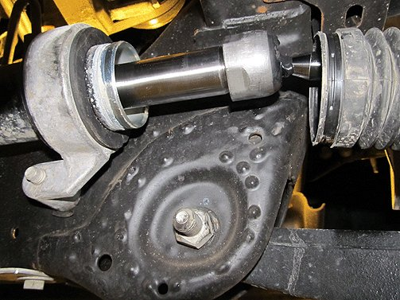
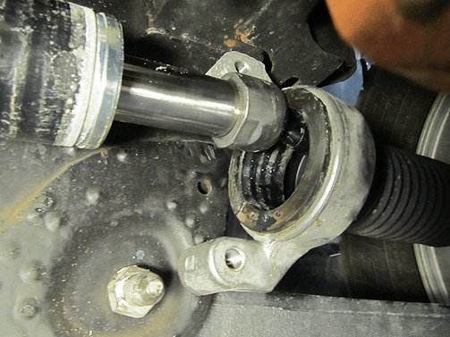
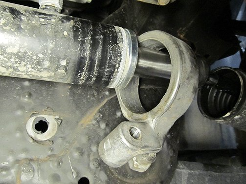
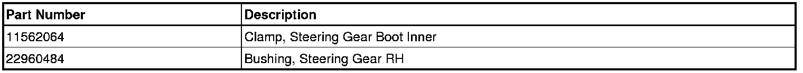
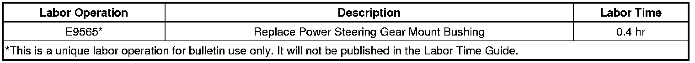

Suspension/Steering - Pop,Click,Or Clunk Noise At Low Speeds
TECHNICALBulletin No.: 12-02-32-003
Date: August 09, 2012
Subject: -Pop, Click or Clunk Noise Coming from Steering Gear at Low Speeds over Bumps Click or Clunk Felt through Steering Column to Steering Wheel
Models:
2007-2013 Cadillac Escalade Models
2007-2013 Chevrolet Avalanche, Silverado, Tahoe
2007-2013 GMC Sierra, Yukon Models
Excluding Hybrids
Condition
Some customers may comment on a pop, click or clunk noise at low speeds when going over bumps and can be felt through the column to steering wheel.
Cause
This condition may be caused by a worn steering gear bushing.
Correction
Replace the steering gear bushing and inner tie rod boot clamp. DO NOT REPLACE the steering gear for this condition.
1. Raise the vehicle.
2. Remove the oil pan skid plate, if equipped.


3. Remove the steering gear mount bolts.

4. Remove the power steering gear boot clamps and slide the power steering gear boot out of the way.

5. Slide the power steering gear mount and bushing to the right.

6. Remove the power steering gear bushing from the mount.
7. Replace the power steering gear mount bushing.
8. Slide the mount and bushing back in place.
9. Slide the power steering gear boot back in place and install clamps.
10. Install the steering gear mounting bolts.
Tighten
Tighten the bolts to 100 Nm (74 lb ft).
11. Install the oil pan skid plate, if equipped.
12. Lower the vehicle.
Parts Information

Warranty Information

For vehicles repaired under warranty, use the table above.

Disclaimer